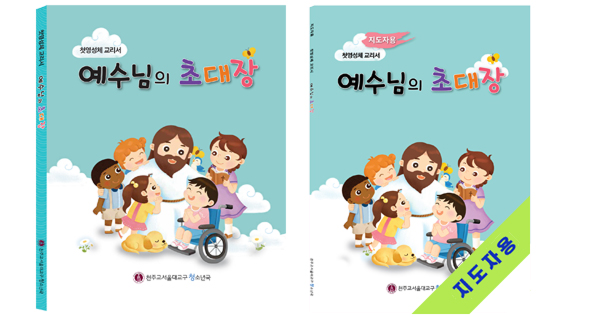

발달장애인은 첫영성체를 받을 수 있나요?
- 네, 가능합니다.
23. 영성체의 허가 기준은 모든 사람들과 마찬가지로 장애인들에게도 동일하다는 것에 주목해야 한다. 즉, 언어 대신 ‘몸짓’이나 ‘침묵’으로도 그리스도의 몸과 일반 음식을 구별할 수 있다는 표현을 할 수 있다면 성체를 영할 수 있다. 이러한 판단을 내리기 위해 본당 사목구 주임은 장애인의 부모, 보호자, 특수교사, 종교 교육자, 장애 전문가 등과 상의하는 것이 필요하다. 만약 성체를 영할 수 없는 것으로 판단되면 이러한 결정의 이유를 장애인 당사자와 그의 부모에게 세심한 배려를 통해 설명해주어야 한다. 정확히 판단하기 어려운 경우에는 세례성사로 인한 그들의 권리를 바탕으로 긍정적으로 해석하여 영성체를 허락함이 권고된다. 장애 자체가 성체를 영할 수 없는 이유가 되지 않기 때문이다.
발달장애인의 첫영성체 교육 과정은 어떻게 진행되나요?
- 비장애인 첫영성체 교육 과정과 다르지 않습니다. 다만 장애 정도나 상황에 따라 교육과정과 일정을 조정할 수 있습니다.
(본문 아래 「1. 첫영성체 교육」 참고)
발달장애인 첫영성체 교육 과정에서 중요한 것은 무엇인가요?
- '그리스도의 몸과 일반 음식을 구별할 수 있는가?'하는 것입니다. 첫영성체를 준비하면서 성체와 음식의 구별을 위해 교구를 사용하여 배울 수 있습니다.
(본문 아래 「2. 찰고」 참고)
첫영체 교육
찰고
첫영성체
첫 고해
-
1
첫영성체 교리서 「예수님의 초대장」을 토대로 구성한 교육과정 예시입니다.
-
2
상황에 맞게 교육과정을 조절하거나 재구성하여 진행할 수 있습니다.
| 주제 | 기본교육과정 | 장애 정도가 심한 경우 | 단기간 교육과정 |
|---|---|---|---|
| 하느님 | 1과 안녕하세요, 하느님 | 영성체 예절, 고해성사 교육에 집중 | 미사, 영성체 예절, 고해성사 교육에 집중 |
| 2과 하느님께 두 손 모아 기도해요 | |||
| 3과 하느님께서 세상을 만드셨어요 | |||
| 4과 하느님께서는 우리를 사랑으로 만드셨어요 | |||
| 예수님 | 5과 예수님께서는 하느님의 아들이에요 | 영성체 예절, 고해성사 교육에 집중 | 미사, 영성체 예절, 고해성사 교육에 집중 |
| 6과 예수님께서는 우리를 사랑하세요. | |||
| 7과 예수님께서는 우리를 위해 돌아가셨어요. | |||
| 8과 예수님께서 부활하셨어요. | |||
| 미사 | 9과 예수님께서 미사에 초대하세요. | 영성체 예절, 고해성사 교육에 집중 | 9과 |
| 10과 하느님의 말씀을 들어요. | 10과 | ||
| 11과 빵과 포도주는 예수님의 몸과 피로 변해요. | 11과 | ||
| 12과 예수님의 몸을 모셔요 | 12과 | 12과 | |
| 첫고해 | 13과 하느님께 우리의 잘못을 이야기해요. | 13과 | 13과 |

* (수업용 피피티는 청소년국 장애인신앙교육부 홈페이지 첫영성체 자료실에서 내려받기 가능합니다.)
-
1
찰고를 할 때 중요한 점은 '성체와 음식의 구별' 여부를 확인하는 것입니다.
-
2
「성체와 음식을 구별해요」 교구를 이용하여 사전에 충분히 연습합니다.
-
3
교구를 이용하여 신부님이 찰고를 진행합니다.
-
4
찰고 시 아래의 질문을 참고하세요.

* 「성체와 음식을 구별해요」 교구
질문 1. 두 가지 그림 중에서 성체를 나타낸 모양은 무엇인가요?
(성체와 음식 구별이 가능한지 확인하는 질문입니다.)
질문 2. 성체는 영혼의 양식입니다. 성체 모양 교구를 옮겨 표현해 보세요.
- 성체와 음식 구별이 가능한지 확인하는 질문입니다.
-
1
첫영성체 후 1~2개월 안에 첫 고해를 진행합니다. (유아세례를 받은 경우, 첫영성체 전에 첫 고해를 합니다.)
-
2
고해소 안에서 진행하는 것이 어려운 학생은 넓은 공간에서 면담식 고해성사로 진행하는 것이 좋습니다.
-
3
학생의 상황에 맞는 자료를 선택하여 고해성사를 진행할 수 있습니다.

1. 고해성사 성찰카드
- 자기표현에 어려움이 있는 학생, 글자를 읽기에 어려움이 있는 학생이 사용하기 좋습니다.
- 성찰카드를 이용하여 먼저 성찰을 한 다음, 고해성사를 진행합니다.
- 성찰카드를 보면서 고백할 수 있고, 말로 고백하기 어려운 학생은 성찰카드를 신부님에게 보여주는 방법으로도 고백할 수 있습니다.

2. 고해성사 안내서
- 장애가 심하지 않은 학생, 성인 발달장애인이 사용하기 좋습니다.
- 안내서를 참고하여 성찰을 진행하고, 성찰지에 체크합니다. (성찰지는 청소년국 장애인신앙교육부 홈페이지 중앙 퀵메뉴에서 내려받기 가능)
- 말로 고백하기 어려운 학생은 준비된 성찰지를 신부님에게 보여주는 방법으로도 고백할 수 있습니다.